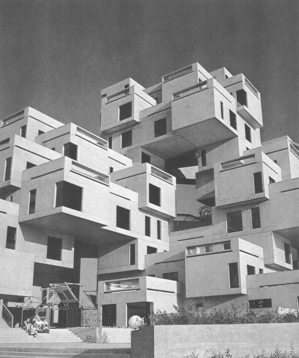
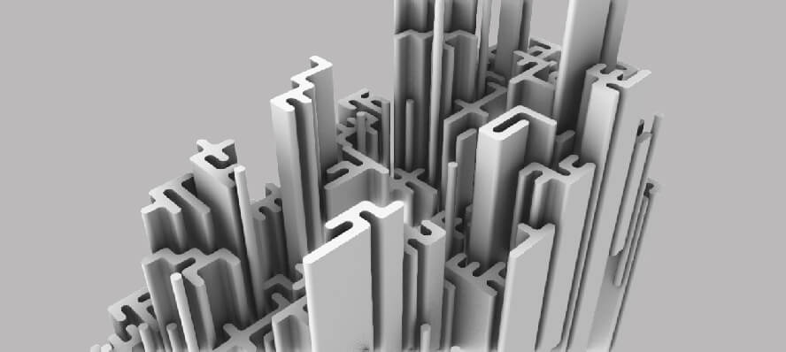
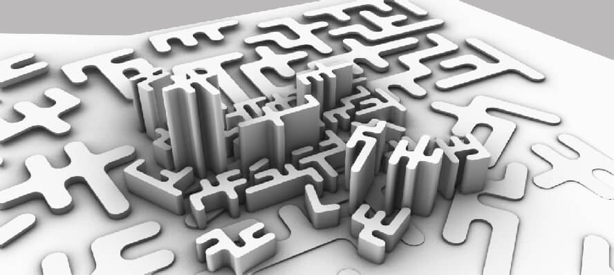
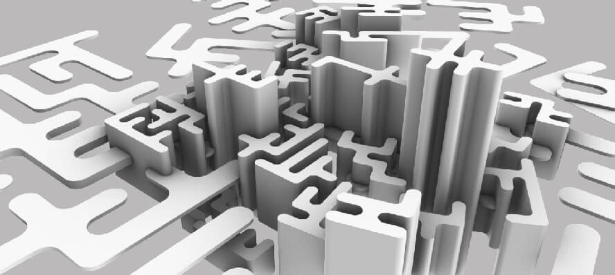
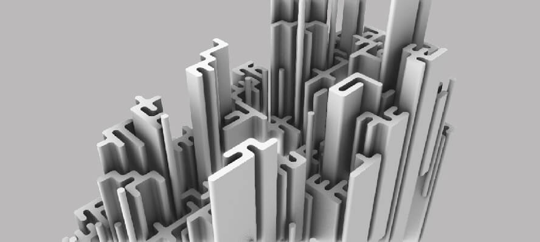
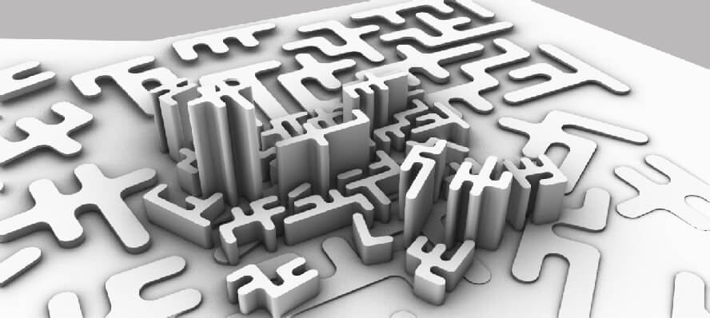
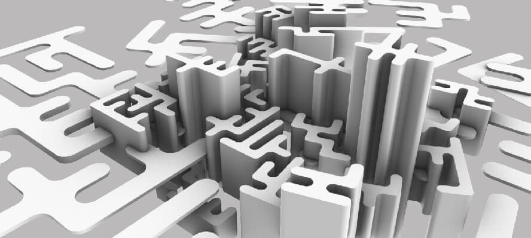

Вот уже несколько тысячелетий, создавая своё окружение, человечество, в той или иной степени, неизменно следует принципам модульного проектирования. И хотя, современные технологии, позволяют создавать свободные формы, большинство дизайнеров, исходя из экономических соображений, вынуждены применять в своих разработках модульное деление. Но простое многократное копирование в редких случаях приводит к хорошему внешнему виду. О важности вариаций прекрасно знают дизайнеры, которым приходилось выбирать плиточный материал для больших поверхностей. При неправильно составленном модуле, в глазах начинает “рябить”, и длительное прибывание в таком помещении у большинства вызывает чувство дискомфорта. Массивные скопления предметов, встречающиеся в природе, как правило, составлены случайным образом. Отдельные элементы варьируются по различным параметрам: положению, оттенку, размеру. Так, например, плитка из натурального мрамора имеет неповторимый рисунок и смотрится гораздо лучше её имитации с повторяющимся шаблоном.
В период после Второй Мировой, на волне всеобщей рационализации, принцип модульного проектирования стал оформляться как методология. Применение однотипных компонентов, требующих небольшого числа производственных операций, способствовало оптимизации ресурсов. В шестидесятые годы, когда благосостояние населения стало расти, использование модулей, доведённое до психоделического максимализма, превратилось в творческий протест.

Мы, в свою очередь, рассмотрим принципы построения одного орнамента, появившегося как раз в те годы. Изначально, в алгоритмическом искусстве применялись ручные методы расчета. С распространением компьютеров многие художники перешли к их использованию. Для создания такого простого орнамента, как рассматриваемый нами, вовсе не обязательно вычислять его на компьютере, однако, формализация метода позволяет расширить область его применения. В совокупности с программируемыми станками, алгоритм позволит создавать уникальные отпечатки орнамента, что является недостижимым при ручном составлении рисунка.
Несмотря на то, что представленные орнаменты имеют похожие модули, принципы их построения различны, впрочем как и характеристики. Орнамент расположенный справа можно использовать при проектировании лабиринта: открытость диагонали гарантированна, все области изолированны и не имеют внутренностей. Если орнамент слева использовать для создания прорезей, то внутренние окружности выпадут вместе с охватывающей их областью.
Итак, алгоритм построения “левого” орнамента заключается в случайном копировании пары модулей.
Для “правого” орнамента мы применим алгоритм, который я назвал HYDRA. Впрочем, может сгодиться любое существо, выпускающее свои щупальцы в разные стороны. Итак, взглянем на модули, которые нам необходимо будет скопировать в некоторую сетку.
В нескольких словах, метод можно описать следующим образом: выбираем из общей сетки некоторую ячейку, отмечаем её как тело гидры, если есть возможность расти, захватываем прилегающую к телу свободную ячейку, добавляем её к гидре, ячейки у которых захвачены все направления убираем из тела. В качестве критерия возможности роста, я использую общее количество захваченных ячеек.
Параллельно с ростом, необходимо штамповать наши модули в сетку удвоенной размерности. Алгоритм штампования довольно хитрый и требует детального рассмотрения.
В нетронутом виде удвоенная сетка заполнена нулями. Перечисляя по модулю ячейки, мы воспроизводим ещё не разросшееся состояние, в котором каждая клетка является маленькой гидрой. По мере разрастания, переходы между клетками заполняются числами, кодирующими характер перехода. Двойка означает горизонтальный переход, тройка - вертикальный. При наложении двойки и тройки по модулю четыре, возникает горизонтально-вертикальный переход, который мы реализуем с помощью простой перекодировки базовой сетки.
На изображении показаны методы перечисления сторон и ячеек, а также соответствие значений удвоенной сетки общему расположению модулей. Стоит отметить, что Julia использует единичную индексацию, которая иногда приводит к усложнению алгоритма. Поэтому рассмотрение нашего алгоритма мы начнем с вспомогательных функций, упрощающих индексирование массивов.
compass = CartesianIndex.(((1, 0), (0, -1), (-1, 0), (0, 1)))
function scale_idx(idx, n)
return idx + (idx - one(idx)) * (n-1)
end
function stencil(grid, index, hv)
for di in CartesianIndices((0:1, 0:1))
grid[index + di] = (grid[index + di] + hv) % 4
end
endПеременная compass содержит массив, кодирующий четыре стороны ячейки в соответствии с приведённой выше схемой. Тип CartesianIndex используется при программировании алгоритмов произвольной размерности. Например, можно выполнять приращение индекса как idx + one(idx), а итерацию в многомерном массиве осуществлять посредством одного цикла, что можно наблюдать в функции stencil.
for idx in CartesianIndices(a)
# тело цикла
end
# вместо
for x in axes(a, 2)
for x in axes(a, 1)
# тело цикла
end
endФункция scale_index, как раз и создана потому, что индексация основанная на единице не допускает простого растяжения. Для перечисления каждого второго или каждого третьего, мы не можем использовать N*2 или N*3, хотя, с точки зрения логики, наличие первого элемента во всех множествах, образованных предикатом каждый N, тоже, довольно сомнительное явление, что присуще индексации основанной на нуле. Также, scale_index можно записать в виде idx * n - one(idx) * (n-1). Выражение idx * n - n + one(idx) не подойдёт, хотя и имеет меньшее количество операций, поскольку мы не можем складывать целые числа и индексы.
Функция stencil отпечатывает параметры шаблона в удвоенной сетке. CartesianIndices((0:n, 0:n)) генерирует квадрат лежащий выше некоторого базового индекса. А теперь, наверное, самая мутная часть алгоритма.
function hydra_grid(height, width, maxgen=4)
sub_grid = zeros(Int8, height * 2, width * 2)
top_grid = Set(CartesianIndices((height, width)))
while length(top_grid) > 0
group = Dict{CartesianIndex, BitArray}()
group[pop!(top_grid)] = [0, 0, 0, 0]
gen = 0
while length(group) > 0
indexa, edgesa = rand(group)
side = first(rand(filter(x -> last(x) == 0, collect(enumerate(edgesa)))))
indexb = indexa + compass[side]
edgesa[side] = 1
if all(edgesa)
pop!(group, indexa)
end
if indexb in top_grid
di = compass[side]
stencil(sub_grid, scale_idx(indexa, 2) + di, 2 + (side-1)%2)
group[indexb] = [0, 0, 0, 0]
delete!(top_grid, indexb)
if (gen += 1) > maxgen
break
end
end
end
end
return sub_grid
endПеременная sub_grid представляет нашу удвоенную, инициализированную нулями, сетку. Ячейки сетки top_grid, в которой развивается гидра, помещены во множество, что позволяет легко убирать поглощённые элементы, оставляя только свободные ячейки. Цикл while length(top_grid) > 0 управляет почкованием гидры, пока у неё есть свободное пространство. Словарь group содержит тело, точнее индексированные клетки, содержащие информацию о возможности роста. Разрастание нашего зверя происходит в while length(group) > 0, что означает что у гидры есть свободная поверхность и максимальное количество генераций не достигнуто. Выбирая случайно “гидрины” клетки (rand(group)), мы находим свободные стороны (filter). Если свободных направлений не осталось, выводим клетку из активного состояния (pop!(group, indexa)). В случае, если желаемая клетка не занята собой или другой гидрой, печатаем штамп и забираем её в тело (delete!(top_grid, indexb)). Если гидра исчерпала возможности для роста - начинаем выращивать другую.
Пока что, мы только построили сетку управляющую нашей геометрией. Теперь нам нужно построить саму геометрию.
using ShapeFactory
app = dispatch("CATIA.Application")
prt = app.ActiveDocument.Part
gst = prt.HybridBodies.Add()
gst.Name = "Output"
fac = prt.HybridShapeFactory
xyp = prt.FindObjectByName("xy plane")
pts = fac.AddNewPointCoord.((1000, 0, 1000, 0), (1000, 1000, 0, 0), 0)
ccs = fac.AddNewCircleCtrRadWithAngles.(pts, xyp, false, 500,
(180, 270, 90, 0), (270, 360, 180, 90))
pts = fac.AddNewPointCoord.((500, 0, 500, 1000), (0, 500, 1000, 500), 0)
lns = fac.AddNewLinePtPt.(pts[1:2], pts[3:4])
gst.AppendHybridShape.(ccs)
gst.AppendHybridShape.(lns)Приведённая выше программа строит четыре арки и две прямые - это и есть наши модули. Геометрию нужно добавить в параметрические множество, иначе репликатор поглотит её, и вместо шести элементов в дерево попадёт несколько сотен, что значительно снизит производительность CATIA. Код репликации выглядит следующим образом.
grid = hydra_grid(10, 10)
for y in 0:size(grid, 1)-1
for x in 0:size(grid, 2)-1
mx, my = x * 1000, y * 1000
xv = fac.AddNewDirectionByCoord(mx, my, 1)
xd = sqrt(mx^2 + my^2)
st = grid[y + 1, x + 1]
if st > 1
tx = fac.AddNewTranslate(lns[st-1], xv, xd)
else
tx = fac.AddNewTranslate(ccs[((x+st)%2 + ((y+st)%2)*2) + 1], xv, xd)
end
tx.VectorType = 0
gst.AppendHybridShape(tx)
end
end
prt.Update()Программируя для CATIA, я то и дело, натыкаюсь на того или иного “динозавра”. В этот раз таким “динозавром” оказался AddNewTranslate, который, по непонятным причинам, использует метры в качестве единиц измерения, а погрешности в миллиметровом диапазоне просто зашкаливают. Отсюда все эти тысячи в AddNewPointCoord. Вообще, Dassault Systemes следует решительно пересмотреть свой API, если они хотят конкурировать с Grasshopper или Dynamo.
 




